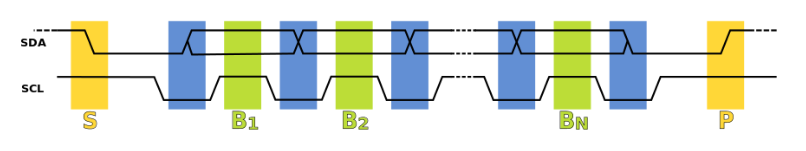
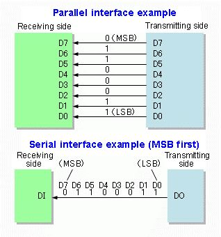
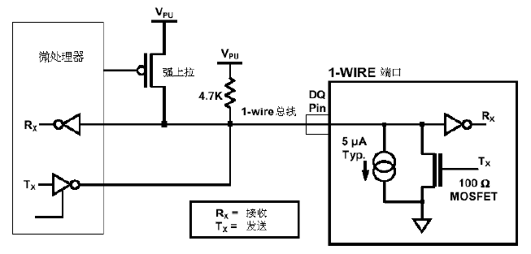

树莓派学习笔记
WiringPi简介
WiringPi是应用于树莓派平台的GPIO控制库函数，WiringPi遵守GUN Lv3。wiringPi使用C或者C++开发并且可以被其他语言包转，例如python、ruby或者PHP等。WiringPi中的函数类似于Arduino的wiring系统，这使得熟悉arduino的用户使用wringPi更为方便。
树莓派具有26个普通输入和输出引脚。在这26个引脚中具有8个普通输入和输出管脚，这8个引脚既可以作为输入管脚也可以作为输出管脚。除此之外，树莓派还有一个2线形式的I2C、一个4线形式的SPI和一个UART接口。树莓派上的I2C和SPI接口也可以作为普通端口使用。如果串口控制台被关闭便可以使用树莓派上的UART功能。如果不使用I2C，SPI和UART等复用接口，那么树莓派总共具有8+2+5+2 =17个普通IO。
wiringPi包括一套gpio控制命令，使用gpio命令可以控制树莓派GPIO管脚。用户可以利用gpio命令通过shell脚本控制或查询GPIO管脚。wiringPi是可以扩展的，可以利用wiringPi的内部模块扩展模拟量输入芯片，可以使用MCP23x17/MCP23x08（I2C 或者SPI）扩展GPIO接口。另外可通过树莓派上的串口和Atmega（例如arduino等）扩展更多的GPIO功能。另外，用户可以自己编写扩展模块并把自定义的扩展模块集成到wiringPi中。WiringPi支持模拟量的读取和设置功能，不过在树莓派上并没有模拟量设备。但是使用WiringPi中的软件模块却可以轻松地应用AD或DA芯片。
I2C
I²C（Inter-Integrated Circuit）字面上的意思是集成电路之间，它其实是I²C Bus简称，所以中文应该叫集成电路总线，它是一种串行通信总线，使用多主从架构，由飞利浦公司在1980年代为了让主板、嵌入式系统或手机用以连接低速周边设备而发展。I²C的正确读法为“I平方C”（”I-squared-C”），而“I二C”（”I-two-C”）则是另一种错误但被广泛使用的读法。自2006年10月1日起，使用I²C协议已经不需要支付专利费，但制造商仍然需要付费以获取I²C从属设备地址。
设计说明
I²C只使用两条双向漏极开路（Open Drain）（串行数据（SDA）及串行时钟频率（SCL））并利用电阻将电位上拉。I²C允许相当大的工作电压范围，但典型的电压准位为+3.3V或+5v。
I²C的参考设计使用一个7比特长度的地址空间但保留了16个地址，所以在一组总线最多可和112个节点通信[a]。常见的I²C总线依传输速率的不同而有不同的模式：标准模式（100 Kbit/s）、低速模式（10 Kbit/s），但时钟频率可被允许下降至零，这代表可以暂停通信。而新一代的I²C总线可以和更多的节点（支持10比特长度的地址空间）以更快的速率通信：快速模式（400 Kbit/s）、高速模式（3.4 Mbit/s）。
虽然最大的节点数目是被地址空间所限制住，但实际上也会被总线上的总电容所限制住，一般而言为400 pF。

如上所述，参考设计为使用串行数据线（SDA）和串行时钟线（SCL）、拥有7bit寻址空间的总线。 总线上有两种类型角色的节点：
- 主节点 - 产生时钟并发起与从节点的通信
- 从节点 - 接收时钟并响应主节点的寻址
该总线是一种多主控总线，即可以在总线上放置任意多主节点。此外，在停止位（STOP）发出后，一个主节点也可以成为从节点，反之亦然。
总线上有四种不同的操作模式，虽然大部分设备只作为一种角色和使用其中两种操作模式：
- 主节点发送 - 主节点发送数据给从节点
- 主节点接收 - 主节点接收从节点数据
- 从节点发送 - 从节点发送数据给主节点
- 从节点接收 - 从节点接收主节点数据
一开始，主节点处于主节点发送模式，发送起始位（START），跟着发送希望与之通信的从节点的7bit位地址，最后再发送一个bit读写位，该数据位表示主节点想要与从节点进行读（1）还是写（0）操作。
如果从节点在总线上，它将以ACK字符比特位应答（低有效）该地址。主节点收到应答后，根据它发送的读写位，处于发送模式或者接收模式，从节点则处于对应的相反模式（接收或发送）。
地址和数据首先发送最高有效位。 起始位在SCL位高时，由SDA上电平从高变低表示；停止位在SCL为高时，由SDA上电平从低变高表示。其他SDA上的电平变化在SCL为低时发生。
如果主节点想要向从节点写数据，它将发送一个字节，然后从节点以ACK位应答，如此重复。此时，主节点处于主节点发送模式，从节点处于从节点接收模式。
如果主节点想要读取从节点数据，它将不断接收从节点发送的一个个字节，在收到每个字节后发送ACK进行应答，除了接收到的最后一个字节。此时，主节点处于主节点接收模式，从节点处于从节点发送模式。
此后，主节点要么发送停止位终止传输，要么发送另一个START比特以发起另一次传输（即“组合消息”）。
应用
I²C被应用在简单且其制造成本较传输速度更为重要的外设上。一些常见的应用如下：
- 为了保存用户的设置而访问NVRAM芯片。
- 访问低速的数字模拟转换器（DAC）。
- 访问低速的模拟数字转换器（ADC）。
- 改变监视器的对比度、色调及色彩平衡设置（视频数据通道）。
- 改变音量大小。
- 获取硬件监视及诊断数据，例如中央处理器的温度及风扇转速。
- 读取实时时钟（Real-time clock）。
- 在系统设备中用来打开或关闭电源供应。
I²C的另一个强大用途在于微控制器的应用，利用两根通用的输入输出接脚及软件的规划，可以让微控制器控制一个小型网络。
外设可以在系统仍然在运作的同时加入或移出总线，这代表对于有热插拔需求的设备而言是个理想的总线。
像I²C这样的总线之所以流行起来，是因为计算机工程师发现到对于集成电路设计而言，许多的制造成本源自于封装尺寸及接脚数量。更小的包装通常能够减少重量及电源的消耗，这对于移动电话及手持式计算机而言格外重要。
UART
在通信和计算机科学中，Serial communication是一个通用概念，泛指所有的串行的通信协议，如RS232、USB、I2C、SPI、1-Wire、Ethernet等。这里的串行（serial），是相对并行通信（parallel communication）来说的，如下图：

理解串行通信的概念之后，大家可能会有疑问：接收方接收到一长串的、表示0/1电平跳变的信号之后，怎么还原出有效的信息呢？有两种方法：
发送端在发送串行数据的同时，提供一个时钟信号，并按照一定的约定（例如在时钟信号的上升沿的时候，将数据发送出去）发送数据，接收端根据发送端提供的时钟信号，以及大家的约定，接收数据。这就是常说的同步串行通信（Synchronous serial communication），I2C、SPI等有时钟信号的协议，都属于这种通信方式。本文不再详述。
发送端在数据发送之前和之后，通过特定形式的信号（例如START信号和STOP信号），告诉接收端，可以开始（或者停止）接收数据了。与此同时，收发两方会约定一个数据发送的速度（就是大名鼎鼎的波特率），发送端在发送START信号之后，就按照固定的节奏发送串行数据，与此同时，接收端在收到START信号之后，也按照固定的节奏接收串行数据。这就是常说的异步串行通信（Asynchronous serial communication），我们本节的主角—-串口通信，就是这种通信方式。
UART(Universal Asynchronous Receiver/Transmitter) 即是规定编码格式、bit rate，产生通信所需的bit流的标准。
SPI
串行外设接口（Serial Peripheral Interface Bus，SPI），是一种用于短程通信的同步串行通信接口规范，主要应用于单片机系统中。类似I²C。 这种接口首先被Motorola（摩托罗拉）公司开发，然后发展成了一种行业规范。典型应用包含SD卡和液晶显示器。 SPI设备之间使用全双工模式通信，包含一个主机和一个或多个从机。主机产生待读或待写的帧数据，多个从机通过一个片选线路 决定哪个来响应主机的请求。 有时SPI接口被称作四线程接口，SPI准确来讲称为同步串行接口，但是与同步串行接口协议（SSI）不同，SSI是一个四线程 同步通信协议，但是使用差分信号输入同时仅提供一个单工通信信道。
接口
SPI总线规定了4个保留逻辑信号接口：
- SCLK（Serial Clock）：串列时脉，由主机发出
- MOSI（Master Output,Slave Input）：主机输出从机输入信号，由主机发出
- MISO（Master Input,Slave Output）：主机输入从机输出信号，由从机发出
- SS（Slave Selected）：选择信号，由主机发出，一般是低电位有效
尽管上面的引脚名称是最常用的，但在过去，有时会使用其他引脚命名约定，因此旧IC产品的SPI端口引脚名称可能有所不同。
1-Wire
1-Wire是Maxim子公司达拉斯半导体的专利技术，仅用单一信号线就可像I²C、SPI一样，传输时钟（clock）又传输数据（data），并且数据传输是双向的。1-Wire使用较低的数据传输速率，通常是用来沟通小型设备，如数字温度计。1-Wire有两种速率：标准模式16kbps，驱动模式142kbps。
单总线只有一根数据线。设备主机或从机通过一个漏极开路或三态端口连接至该数据线，这样允许设备在不发送数据时释放数据总线，以便总线被其它设备所使用。单总线端口为漏极开路其内部等效电路如下图所示。

参考文献
- 树莓派学习笔记——wiringPi简介、安装和管脚说明 , by xukai871105.
- I²C, by wikipedia.
- UART、RS232、TTL关系浅析, by 老狼.
- 串行外设接口,by wikipedia.
- 1-Wire,by wikipedia.
- 1-Wire单总线的基本原理,by ce123.
- 解析单总线协议（1-wire）,by zhengqijun_.